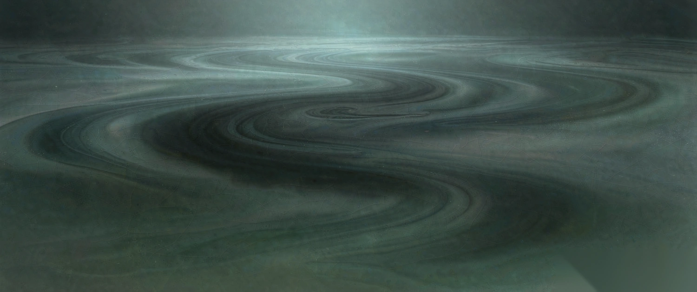
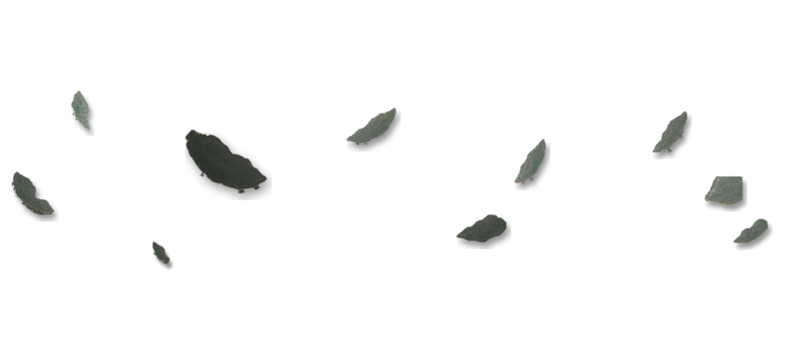
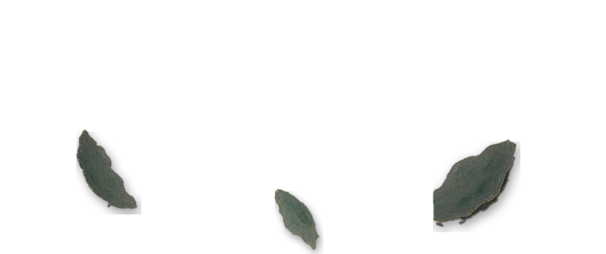

S7 瓷心空间 · 横版三层 + 陀螺仪预览
1500×630 · 三层 bg/mg/fg · 层深 6 : 26 : 64（与竖版同一套）· 单文件可直接打开



屏幕形态：
桌面没有真实传感器。点「启动陀螺仪」会注入 mock 输入（同
window.xhs.miniTool 签名）看手感；「指针兜底」用鼠标拖拽模拟。真机由容器注入真实陀螺仪，调用链不需改。三层与体积
BG 背景 · d=6 · 不透明 · 115.6KB

MG 中景 · d=26 · 10 片 ×0.96 · 31.2KB

FG 前景 · d=64 · 3 片 ×1.20–1.32 · 28.8KB
怎么判断做对了
视差方向。把指针往右拖：FG 应该比 MG 走得远（同一 cx 下按 d/64 缩放，d=64 走满 26px，d=26 走 10.6px）。三层不能同步移动，否则等于整幅平移。
不露边。层尺寸是舞台的 112%（六面各溢出 6%），LIM=26px 时最坏位移占舞台宽 26/900≈2.9%，不会看到层的直边。
三种形态。竖屏 9:16 下 1500×630 的横向底图会被大幅裁切（只留中间约 35% 宽）。这是横向素材进竖屏的固有代价 —— 若竖屏要满幅，得另出一张竖版底，不能靠裁。
与竖版的关系。竖版 assets/scenes/s7_cixin/ 是真拆（从同一张画里剥出 13 片）；横版是「AI 只出釉面底 + 复用竖版那 13 片精修单片重新布点」，所以瓷片的金边、开片是同一批，风格一致。
实测数据
| 项 | 值 |
|---|---|
| 画幅 | 1500×630（横版）／750×1680（竖版） |
| 三层体积 | bg 115.6 + mg 31.2 + fg 28.8 = 175.6KB |
| 层深 | 6 / 26 / 64 |
| 瓷片 | MG 10 片 ×0.96（压暗 4%）／FG 3 片 ×1.20–1.32 |
| FG∩MG 遮挡 | 1259px（前景压中景，制造前后关系） |
| 瓷片亮度比 | 按所在位置底图亮度重定标至 ≈1.55（原直接贴为 1.2–3.4） |
文件：assets/scenes/s7_cixin_h/{bg,mg,fg}.webp · 本页用于验证陀螺仪手感与三形态适配